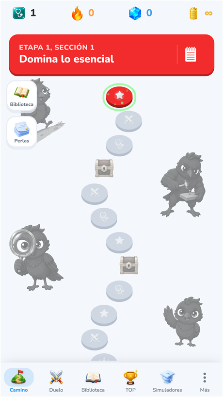
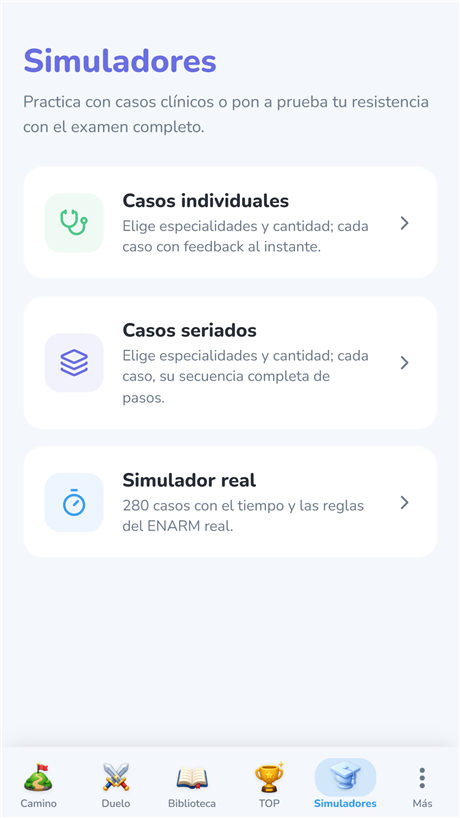
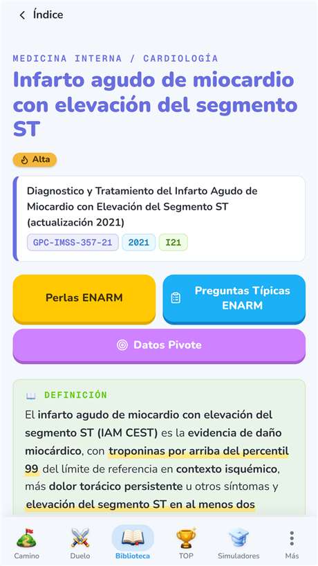
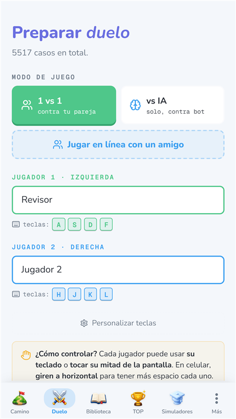

Prepárate para el ENARM, a tu ritmo
AKI ENARM es tu compañero de estudio: casos clínicos, simuladores tipo examen y fichas basadas en guías de práctica clínica, en un camino gamificado.
Abrir AKIFunciona en cualquier dispositivo: computadora, tablet o celular, directo en el navegador. Cómo instalarla
Instálala en cualquier dispositivo
La misma AKI en tu computadora, tablet o celular. Funciona directo en el navegador y, si quieres, la instalas como app, sin tienda.
Abrir AKI



💻 Computadora
Windows · Mac · Linux
- Abre app.akienarm.com en Chrome o Edge.
- Haz clic en el icono Instalar de la barra de direcciones.
- Confirma Instalar.
🤖 Android
Chrome
- Abre app.akienarm.com en Chrome.
- Toca el menú ⋮ (arriba a la derecha).
- Elige Instalar app.
🍎 iPhone · iPad
Safari
- Abre app.akienarm.com en Safari.
- Toca el botón Compartir.
- Elige Añadir a inicio.
¿Qué incluye?
- Camino de estudio gamificado por especialidad, isla por isla.
- Casos clínicos individuales y seriados, con explicación y referencia a la GPC.
- Simulador Real estilo ENARM (280 reactivos, distribución oficial), con sección en inglés.
- Duelos de preguntas, flashcards con repaso espaciado y biblioteca de fichas.
Contenido original
Todos los reactivos y casos son de elaboración propia (“tipo ENARM”) y se apoyan, como referencia, en Guías de Práctica Clínica públicas. AKI ENARM no reproduce reactivos oficiales del examen.
Legal y soporte
Aviso de Privacidad Términos y Condiciones Eliminar cuenta y datos
¿Dudas? Escríbenos a axelcarlong@gmail.com o visita Soporte.